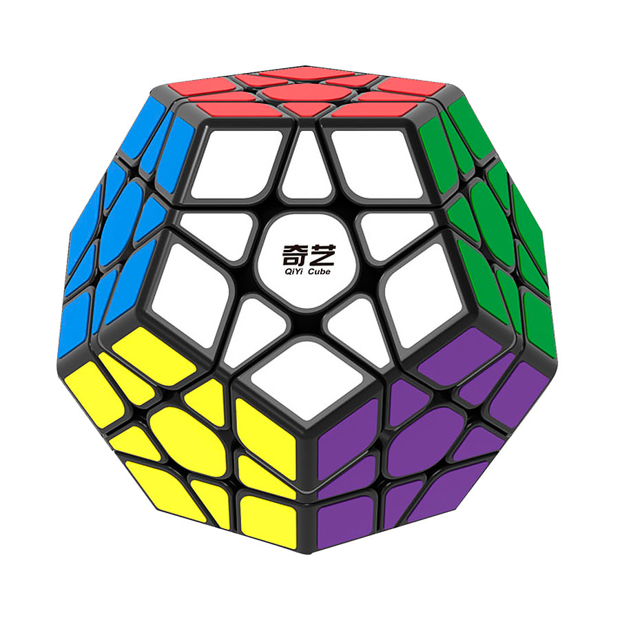
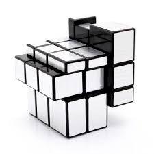
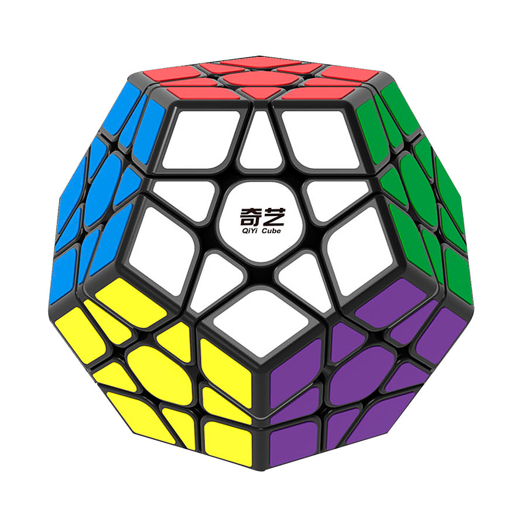
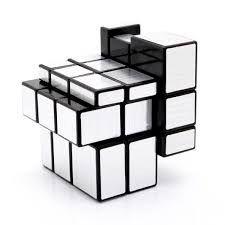

Кубик Рубика
Ку́бик Ру́біка (часто помилково: кубик-рубік) — механічна головоломка, яку винайшов 1974 року угорський скульптор, винахідник Ерньо Рубік.
Ерно Рубік назвав свій винахід «Магічний куб», але у 1980 році компанія англ. Ideal Toys перейменували головоломку за іменем винахідник і цього ж року виграла німецьку нагороду «Гра року» (Spiel des Jahres).
Вже продано понад 300,000,000 екземплярів іграшки в усьому світі
Різні Кубики Рубика

 


